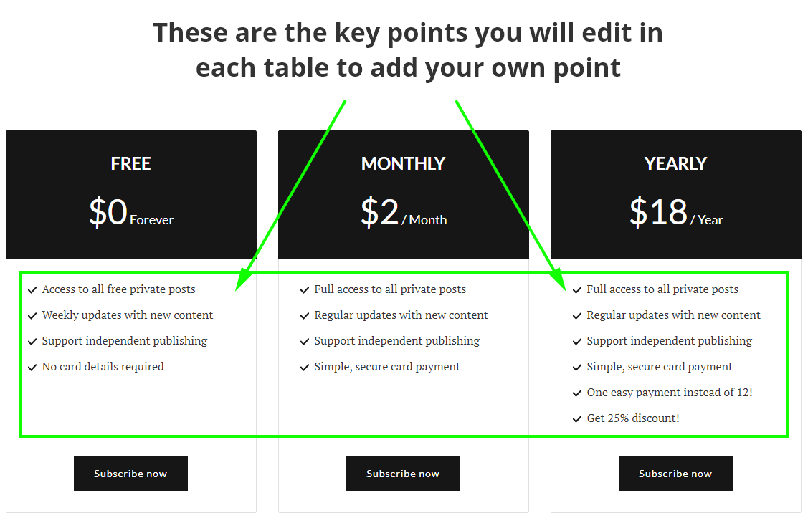

Getting Started
Before you start
This documentation is intended to help you properly install and configure the theme on your ghost blog. Make sure to keep a backup before any modification.
If you are new to Ghost then some links may be useful to know about ghost itself:
- Ghost Official documentation: http://docs.ghost.org/
- Ghost Help and support center: https://forum.ghost.org/
Configuration & Installation
To use the theme extract the main downloaded zip file and first of all make a backup of the theme main folder. theme backup is recommended because you can always get back to the fresh copy.
After extracting you will find a folder named similar to theme name. This file is the production ready ( live site ready ) theme. After the required setup you will make a zip of this folder's content ( all files and folders within this folder ) and upload it to your ghost site.
Please read through the documentation. For heavy customization or to change color or other CSS, see "Development" section below in this documentation.
API key for search function
After release foGhost API version 2, we have to generate an API key and set that key in our theme. Without this the search functionality will not work. Please follow the steps belew.
- Go to your admin dashboard and visit "Integrations" setting page.
- Scroll Below and click on the "Add custom integration" button.
- Give it a name ( anything you want, it does not matter). You can just name it "search"
- Save that and copy the "Content API key.
- Now open "api_key.hbs" file which is located in partials folder.
- Remove everything in that file and paste the API key you have copied from your admin dashboard. Save the file.

Configure disqus comment
To enable disqus you need disqus_shotrname for your site. To setup the disqus comment properly please follow the steps below.
- Go to disqus.com and sign up.
- After log in go to admin dashboard.
- Then follow the instruction and add your website there.
- At the time of adding your site you will get a dishqus shortname, copy that.
- Now open "disqus-comment.hbs" file which is located in partials folder. At line number 7 you will see below code
var disqus_shortname = 'example';
var disqus_shortname = 'yourDisqusShortnameHere';
Home page Configuration
In this theme The home page has custom layout. It shows featured posts, latest posts and there are 6 section to show post by tag / category. Which means you have to specify different tag for each section.
If you feature some post those posts will be shown in featured posts section ordered by published date.
At first let's see section numbering.

Now you have to set tag for each Tag section one by one. Please follow the steps below.
- Open "tag-section-1.hbs" file which is located in "partials > homepage" folder within the theme.
- At line number 1 in that file, you will see this code
{{#get "posts" limit="4" filter="tag:business"}}business with your own chosen tag slug.
Go to tag page in your admin area and select a tag there. you will see information related to that selected tag at the right side of that page. See the image below to know which is tag name and which is tah slug.

<span>Business</span>Business In that line with the Tag name you have chosen. This will be shown as the heading of that section.Footer Widgets
Please Follow the steps below.- Open
footer.hbsfile, located in partials folder, and then reorder the partials call. - To hide or remove any widget in footer just comment out that specific widget.
- Then save the file
Widget area in footer.hbs will look like this..
<div class="col-md-3">
{{> widget-about}}
</div>
<div class="col-md-5">
{{> widget-tags}}
{{> widget-navigation}}
</div>
<div class="col-md-4">
{{> widget-subscribe}}
{{> widget-social}}
</div>
About Widget in footer
In partials folder you will find a file named "widget-about.hbs". Open that file and replace the demo text with your own text.
Adding social links
To add the actual social links to the icons in Follow Us widget, please follow the steps below.
- open
widget-social.hbsfile located in partials folder. - Now replace the
#for eachhrefvalue with your own profile links.
The widget-social.hbs file will look like below.
<ul class="social-links">
<li><a href="#">{{> icons/twitter}}</a></li>
<li><a href="#">{{> icons/facebook}}</a></li>
<li><a href="#">{{> icons/instagram}}</a></li>
<li><a href="#">{{> icons/dribbble}}</a></li>
<li><a href="#">{{> icons/behance}}</a></li>
<li><a href="#">{{> icons/medium}}</a></li>
<li><a href="#">{{> icons/pinterest}}</a></li>
<li><a href="#">{{> icons/youtube}}</a></li>
<li><a href="#">{{> icons/google-plus}}</a></li>
<li><a href="#">{{> icons/linkedin}}</a></li>
</ul>
Navigation Widget
You don't have to edit this widget, it automatically shows same navigation links as header.
Custom links in footer
In footer, beside copyright text you will find some page links. Normally we may have some pages in our site which links we don't want to add at our main menu at top of the site, or we may want to link some external pages. Such as "Terms", "Privacy" erc.
We can use this links area to add those links.
If you open "custom-links.hbs" file which is located in partials folder you will see some links. like below example.
<a href="{{@blog_url}}/privacy/">Privacy</a>In the above code {{@blog_url}} is used for your website's base url. like yoursite.com.
/privacy/ is the post url ie. post slug which you can found at the time of editing post or page at ghost admin.
To add a new link just copy one line there and then change the post url part and also the text part which will be visible as link text to visitor.
Members
Ghost introduced Members feature in Ghost version 3.0.0. This members feature is fully supported by this theme.
You can enable this member feature from the lab page in your ghost dashboard. Before Uploading the theme to your site you have to edit the text ( key points ) in your free, monthly and yearly pricing plan. Please follow the steps below to edit the key point you want to show in your pricing table.
Please follow the steps below to edit the above mentioned key points in each pricing table.
You will find following 3 files within the theme which are located in partials/members folder withinn the theme folder. These are three files for 3 different pricing plan.
- pricing-table-free.hbs
- pricing-table-monthly.hbs
- pricing-table-yearly.hbs
Open First file start editing.
Starting from line number 10 in each file you will see those key points in each line one after one. See example as below.
<li>{{> icons/check-mark}} Access to all free private posts</li>
<li>{{> icons/check-mark}} Weekly updates with new content</li>
<li>{{> icons/check-mark}} Support independent publishing</li>
<li>{{> icons/check-mark}} No card details required</li>
Edit those sample text to add you own text. you can add as many line as you want.
When you are done with editing a file. Save that file and continue with the next file. Follow the same instruction to edit next file. Finish editing these files and you are ready to go to the next step.
Installation
Ones the necessary configuration is done, make a zip of the modified theme folder.
Now login to your admin area and go to Design. In that page scroll down and you can find "Upload a theme" button. Upload the theme zip which you have created while ago. After finishing upload, activate the theme.
You also have to upload another file routes.yaml in your ghost site to work all the membership related page correctly.
Go to lab page in your dashboard, scroll down and you will see an option for routes. There is a button to upload routes YAML and a link below that button to download the routes.yaml which is being used currently. Download that file and and keep as a backup.
In the downloaded zip you will find a routes.yaml file which comes with this theme and specific for this theme.
Upload that file. Using "upload routes YAML" button.

Please note, if you are using self hosted Ghost then may be a you need to restart ghost to take effect the new routes file. If you are using Ghost (pro). then you don't need to do anything here.
If you want to install the demo data to make your site as the preview then you can go to your-site-url/ghost/settings/labs/ and then import the world-times.ghost.demo.json file there. This file is located in demo data folder in main download folder.
Navigation links
To add links to you static page please follow the steps below.
- Post an article in your blog and Then select it as static page.
- Copy the url for this post / page.
- Go to Design page in your admin dashboard.
- Add a label and the url and save it.
- Now the theme will show newly added link in navigation.
Featured Image in post
Ghost supports featured/cover image in post natively, and this theme handel that nicely. Recommended image size is, minimum 1200px wide.
Theme Translation
Ghost introduced Theme translation and blog localization feature in version 1.20.0. We implemented translation support to this theme. Please follow the steps below to translate this theme in your language. Please follow the steps below to correctly translat the theme in your language.
- Within theme folder, there is a folder named "locales". In that folder by default you will find a file named "en.json". This is the default file for english language and you have to use this file to create your own language file.
- make a copy of en.json and give a name following this format [language_code].json ( example: for french fr.json for German i.e. Deutsch "de.json for Russian ru.json etc. )
- If you are not sure about what is you language code then you can visit this wiki page and see. Use the two letter (ISO 639-1) code.
- Now open the newly created <your_language>.json file in text editor. You will see "KEY": "VALUE" format in each line.
- In english language KEY and VALUE are same. Now you read the left part of the : ie. KEY part and change the tight part ie. VALUE part to your own language.
- After finishing the translation Save the file and upload the theme to your site.
- Go to your admin area, Visit "Genera" setting page and change the "publication Language" option. By default there is "en" for english. Add your own language code there in place of "en" and save the settings.
- Visit your site, If everything goes right, you will see all the theme related text in your site is in your translated language.
Development
Theme Customization
If you need to add only small css then you can add using Ghost's Code Injection feature. In "blog header" box you can add css like below examle. replace the css with your own css between the <style> tag.
<style>
.header-wrapper .text-logo {
color: #076eff;
}
</style>
Detail customization prerequisite
This theme is built using Gulp to compile javascript and CSS. CSS is written in SCSS. So if you want to modify the theme color, styles or appearance or anything you want to customize, before doing that you need to setup development environment setup.
Please follow all the steps below one by one to do it.
You need to have installed node js and gulp installed in your local machine.
- If you don't have nodejs installed in your machine then visit nodejs.org and download and install latest LTS version of node js.
- After installing node js open a command prompt or terminal. Then type
node -v. If it shows a version number then node js is installed correctly. Also enter this commandnpm -vto see npm ( comes with node js) is installed properly. - After installing node js you need to install Gulp CLI globally in your machine. So in your terminal or command prompt enter this command.
npm install gulp-cli -g. It may take some time, it will install Gulp CLI globally in your machine. Now you have done the environment setup. - At this point go to the development theme folder. In downloaded zip there is a folder named "development". Within that folder you will see a folder named as the theme name. Enter in that folder and run command prompt / terminal here. Or you can navigate to this folder within already running terminal.
- Now enter command
npm install. It may take some time. It will install all the development dependency within the project. It may show some warning, don't worry those are OK. - At this time you are ready to modify theme, Run one more command
gulpin the terminal. It will initially compile all files and star to watch file changes. Keep the terminal open and start customizing the theme.
How to Change Color or CSS
In the theme folder you will find "assets > scss" folder which contains all the theme styles written in SCSS.
To change any style / css you need to modify here. In SCSS folder you will find a folder named "components" which contains a bunch of .scss files which are part of the whole theme's style. and all those files are imported in a specific order in "screen.scss" file located in "scss" folder root outside of "components" folder. please dont edit that file.
To change the Theme color please follow the steps below.
- Open the
_color-and-font.scssfile in your code editor. - Now you have to change the color hexcode (#xxxxxx) in this file and save the file.
- If you have followed the above section of instruction ( Detail customization prerequisite), and already running terminal with the gulp command then the file changes will be detected and if there is no error in your file then it will be automatically compiled.
The _color-and-font.scss file looks like below.
/*=====================================================
Colors
=====================================================*/
/* different shades of gray used for text and other elements */
$color-dark: #161616;
$color-light: #AEAEAE;
$color-normal: #565656;
/* Other colors */
$link-color: #275beb; /* used for links in post content */
$border-color: #E0E0E0;
$white: #ffffff;
$black: #000000;
$success: #60bd0c;
$error: #e00543;
/*=====================================================
Fonts
=====================================================*/
$sans-serif: 'Lato', sans-serif;
$serif: 'PT Serif', serif;
After modifying the theme css when you are done and want to install the final theme in your live site, do the following.
- Go to running terminal ( terminal is navigated to development theme folder and running
gulpcommand to watch the file changes ) - Press Ctrl + C or Cmd + C in your keyboard to end the running task.
- After ending running task enter this command,
gulp build. This command will build the production ready ( live site ready ) theme package within a folder named "build". - After doing the
gulp buildif you need you can configure the theme options ( such as disqus shortname, social links etc ) then use this commandgulp zip. It will make a folder named "dist" and make a zip of the contents of "build" folder within "dist" folder. - Now you can upload this newly created zip in your ghost admin panel.
Changelog
V 2.0.0 - 11th November, 2019
- Replaced deprecated {{code}} helper with {{statusCode}} helper.
- Updated API uses to v3.
- Updated search functionality to use API v3.
- Added new Membership feature.
- Modified Subscribsion widget to use new members feature.
- Added new custom pages Account, susccribe, Sign in pages.
- Custom Call to action for membership and paid membership in single post.
- Added exta translation.
- Removed unused ghostHunter js plugin.
V 1.4.1 - 4th October, 2019
- Improved the Bookmark card style in desktop and mobile view.
Changelog
V 1.4.0 - 18th September, 2019
- Added supporting css for new bookmark card.
V 1.3.0 - 24th May, 2019
- Replaced @blog to @site and {{lang}} to {{@site.lang}}.
V 1.2.1 - 24th January, 2019
- Fixed Small image in post content aligned left. Now it's aligned center.
V 1.2.0 - 21st January, 2019
- Fixed Search functionality breaks after releasing API V2. Now We need to set an API key ( please see the "API key for search function" in the documentation ).
V 1.1.0 - 18th January, 2019
- Theme now supports and uses Ghost content API version 2
- Added missing google font css file.
V 1.0.1 - 16th January, 2019
- Fixed share links
- Fixed image logo maximum width CSS
V 1.0.0 - 10th December, 2018
- Initial release
Source and Credits
The fonts, scripts, images or other files used in this theme are listed below.Font
Icons
Scripts
Images
- Preview Images form unsplash.com